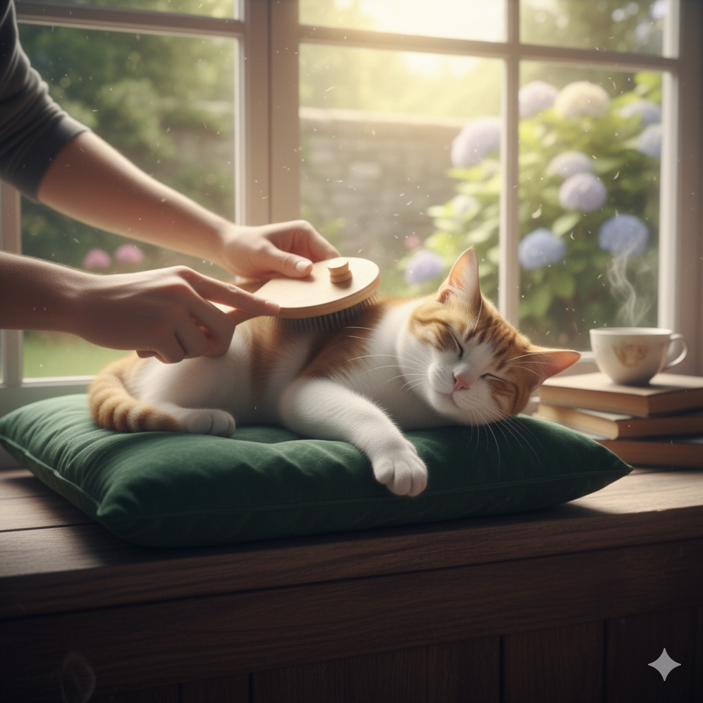
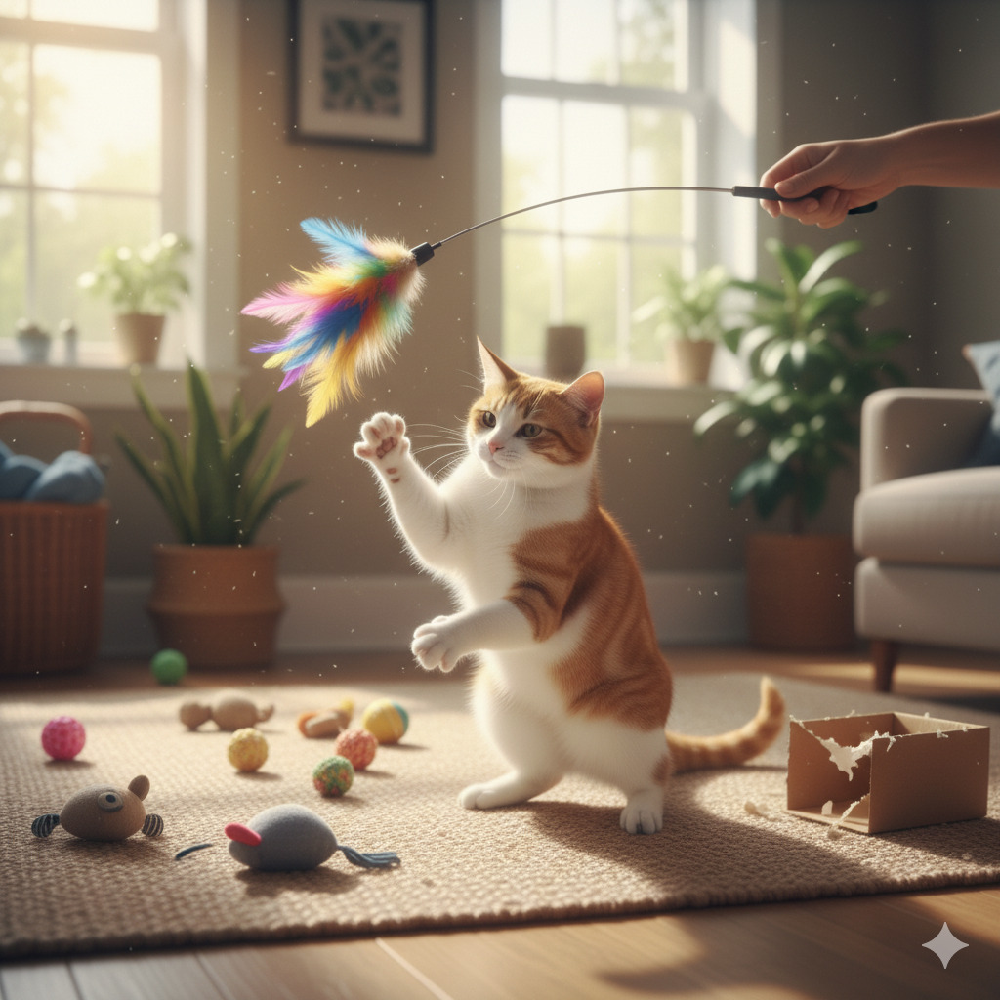
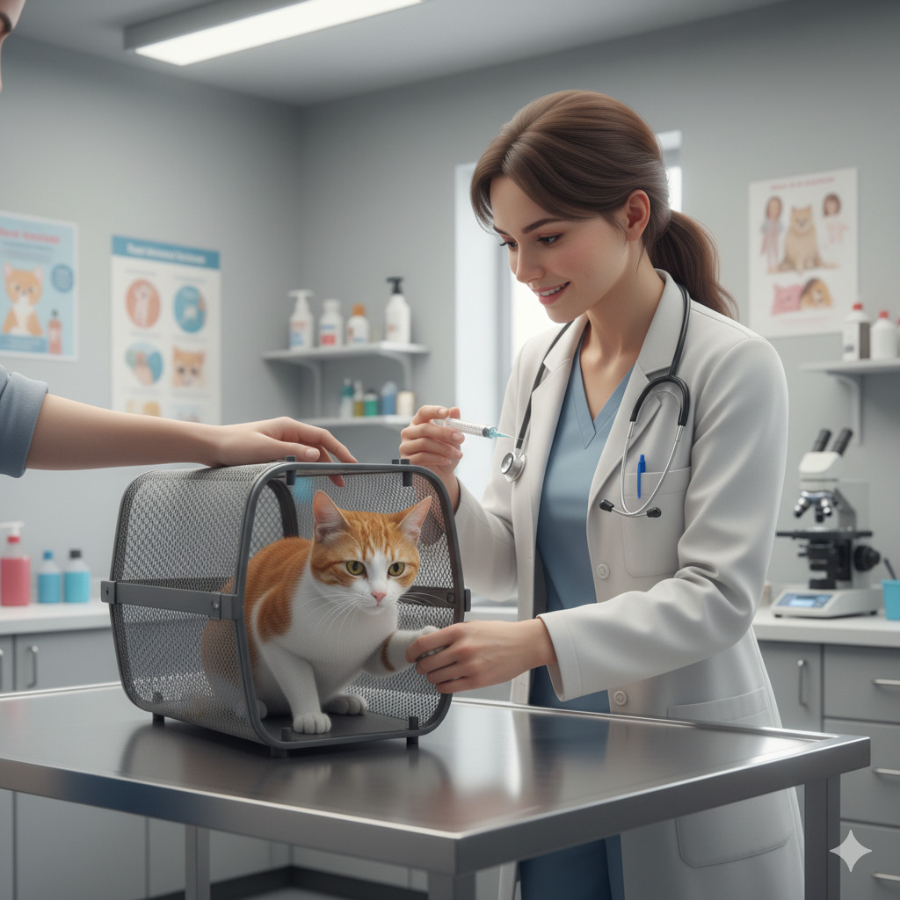
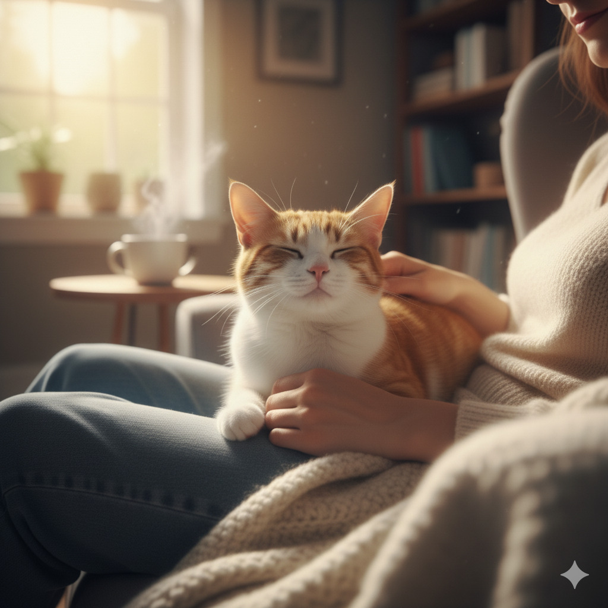

Guia para Donos de Gatinhos
Cuide do seu felino com amor, saúde e conforto.

Alimentação Adequada
Gatos são carnívoros, e uma dieta adequada é crucial para sua saúde. Certifique-se de fornecer:
- Ração de Qualidade: Opte por alimentos balanceados e adequados para a idade do gato.
- Água Fresca: Mantenha uma tigela de água limpa disponível o tempo todo.

Ambiente Confortável
Gatos adoram conforto. Crie um ambiente acolhedor considerando:
- Caminhos de Escalada: Gatos adoram ficar em lugares elevados. Forneça prateleiras ou árvores para gatos.
- Áreas de Descanso: Ofereça camas confortáveis e almofadas em locais tranquilos.

Higiene e Cuidados
Manter seu gato limpo e saudável é uma parte vital da paternidade responsável. Faça isso através de:
- Escovação Regular: Principalmente para gatos de pelo longo. Ajuda a prevenir bolas de pelo.
- Caixa de Areia Limpa: Limpe a caixa de areia diariamente para garantir a higiene.

Brincadeiras e Estímulo Mental
Gatos precisam de estímulos mentais e físicos. Mantenha-os ativos com:
- Brinquedos Interativos: Brinquedos que desafiem a mente do gato são essenciais.
- Tempo de Brincadeira: Dedique tempo para brincar com seu gato todos os dias.

Visitas ao Veterinário
Manter as consultas regulares com o veterinário é crucial para a saúde a longo prazo:
- Vacinação Atualizada: Mantenha as vacinas em dia para prevenir doenças.
- Check-ups Anuais: Exames regulares ajudam a detectar problemas de saúde precocemente.

Conclusão
Seguindo estas diretrizes, você será um dono de gato excepcional. A paciência e o amor são essenciais para construir uma relação duradoura com seu felino. Curta cada momento com seu amigo peludo! 🐱✨